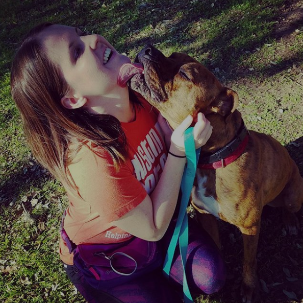
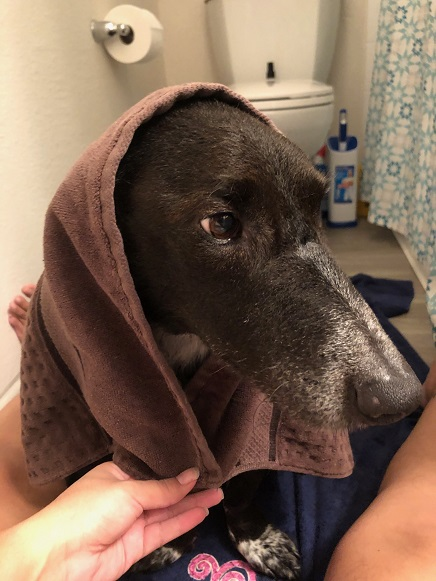
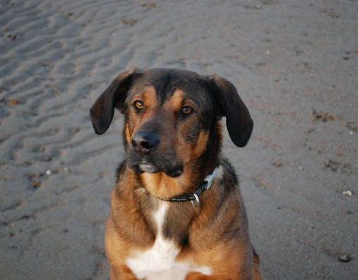

Happier pups, happier people
Walk & Wag is a dog walking service located in the greater Denver area. We are a small, dedicated team of dog lovers who will give your pup the fun she wants and the peace of mind you need.
Here are the types of walks we offer:
Here are some customer testimonials:
"My Juno loves it when Eliza from Walk & Wag comes over for her daily walk. Juno always comes home tired and happy!" -Jon M., Broomfield

"Walk & Wag takes such great care of Sawyer. I would highly recommend them to every Denver dog owner." -Paola O., Westminster
"If it weren't for Walk & Wag, Diego would have a pretty boring life." -Ann W., Arvada